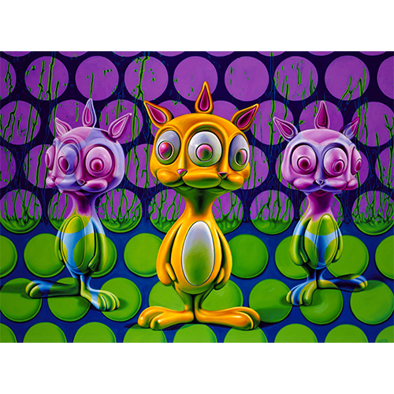

Exhibitions
Ron English — New Works, Robert Berman Gallery (Berman/Turner Projects, Bergamot Station), Santa Monica, California, US, October 14–November 11, 2006.
Literature
Ron English, Abject Expressionism: The Art of Ron English (San Francisco: Last Gasp, 2007), p. 42. ISBN 978-0867196894.
Notes
This work also appears on Loyal KNG’s post about Ron English and Abraham Obama, available here, accessed April 21, 2026.
Poster reproducing Bunnnie Rabbbits.